Opening stock, every receipt, delivery, return, transfer and adjustment, and closing stock – quantity and value, per product and warehouse, for any period. Computed by a single PostgreSQL query and delivered as an interactive list, pivot, Excel file or PDF.
Accountants and warehouse managers ask the same question every month: what did we have, what came in, what went out, and what is left? Standard Odoo has the data but not the report.
Four steps, all from one dialog.
Screenshots use demo data: Red Sea Trading Co. (SAR) with three warehouses – Jeddah Main, Riyadh DC and Dammam Hub – 12 products in three categories and 20 transfers over September and October 2026. The report period is 1–25 October 2026.
A single entry, Inventory › Reporting › Inventory Ledger. Like the rest of Odoo’s Reporting menu it is visible to Inventory / Administrator users. Nothing to configure after installation.
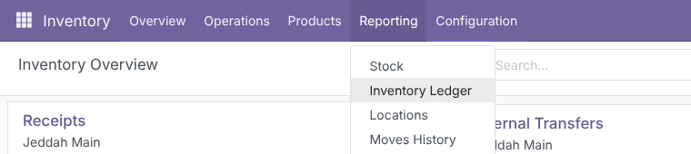
Pick the Report Type (Summary or Detailed) and the Period – by default the first of the month to today. Narrow the Scope with Warehouses, Product Categories (sub-categories included) and Products (goods with Track Inventory), or leave them empty for everything. Hide Zero Lines skips products with no opening stock and no movement. The Opening Stock Method chooses between Fast (current stock rolled back to the start date) and Audit (sum of the full move history) – both give the same figures on healthy data, so you can use Audit to cross-check.
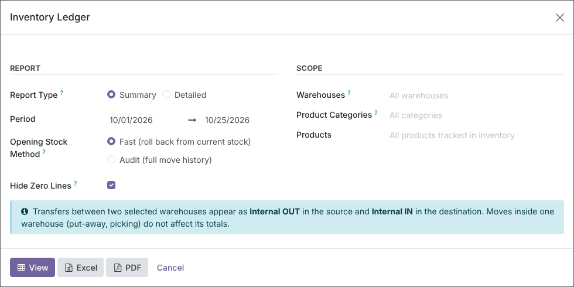
Click View. Each line shows Opening Qty, the inbound columns (Purchases / Receipts, Internal IN, Total IN), the outbound columns (Sales / Deliveries, Internal OUT, Total OUT), Closing Qty and Closing Value, with totals at the bottom. Customer Returns, Vendor Returns, adjustment columns and every value column are one click away in the optional-columns menu. Lines with no movement are greyed; negative closing stock turns red. Search filters include With Movements, Inbound, Outbound and Negative Closing, and you can group by Company, Warehouse, Product Category, Product, Movement Type or Date.
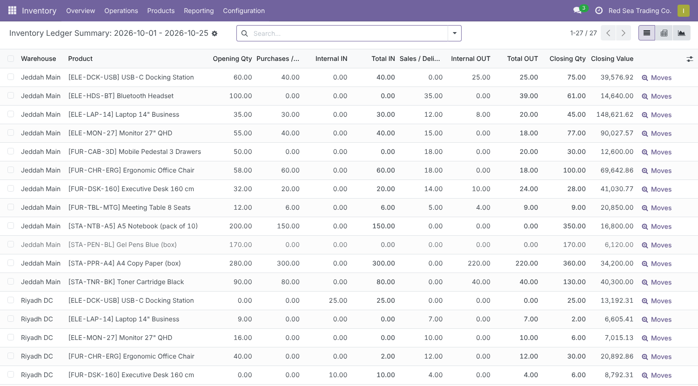
The same lines open in Odoo’s native pivot – product categories down, warehouses across, with Opening Qty, Total IN, Total OUT and Closing Qty as measures – and in a graph of closing stock per warehouse, stacked by category, with Odoo’s Sum line on top. Re-group, swap axes, add value measures or download the pivot as usual.
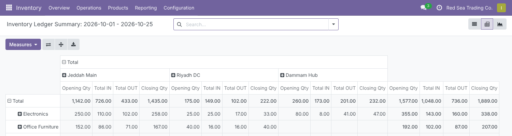
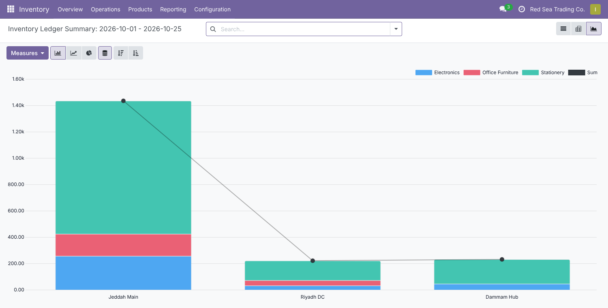
Choose Detailed to get every movement in the period. Each product and warehouse starts with an Opening Balance row (highlighted), followed by its movements in date order with Date, Movement Type, Reference, Partner, Total IN, Total OUT, Running Balance, Unit Cost, IN Value and OUT Value. Here: Jeddah Main, Electronics only.
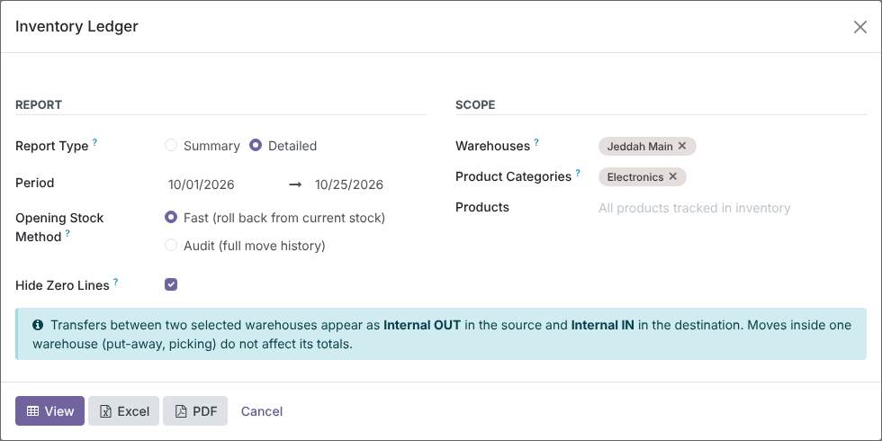
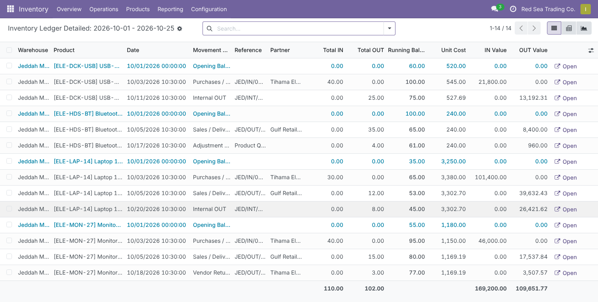
Every summary line has a Moves button that opens Odoo’s Moves History, already filtered on that product, that warehouse and that period – here the receipt, delivery and transfer behind the laptop example above. In the detailed ledger, Open jumps straight to the transfer (or stock move) of the line.
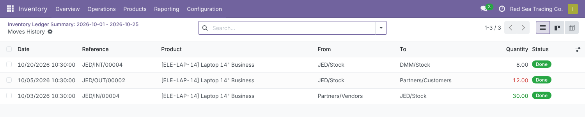
The Excel button downloads an .xlsx built with xlsxwriter: company logo and name, the filters used, colour-coded INBOUND, OUTBOUND and VALUATION header bands, frozen headers, autofilter, quantities in the product unit-of-measure precision, values in your company currency, and a TOTAL row that uses SUBTOTAL so it follows the filter. The detailed workbook groups movements by product with opening and closing balance rows. Print setup is A4 landscape, fit to width, with page numbers.
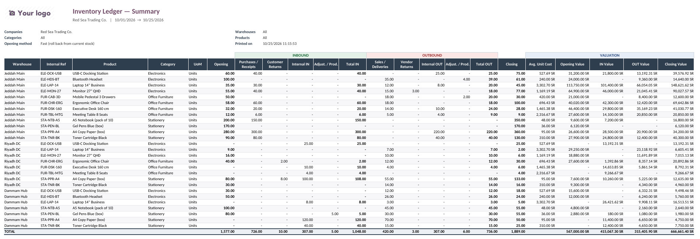
The PDF button prints an A4 landscape QWeb report inside your company’s external layout. The summary is grouped by warehouse with a Subtotal per warehouse and a GRAND TOTAL; the detailed version shows one block per product with Opening Balance, movements and Closing Balance. Table headers repeat on every page and the page margins leave room for a full header with logo and address.
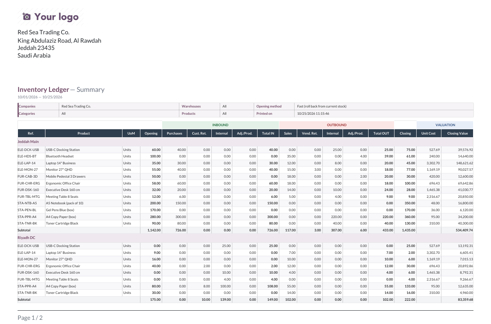
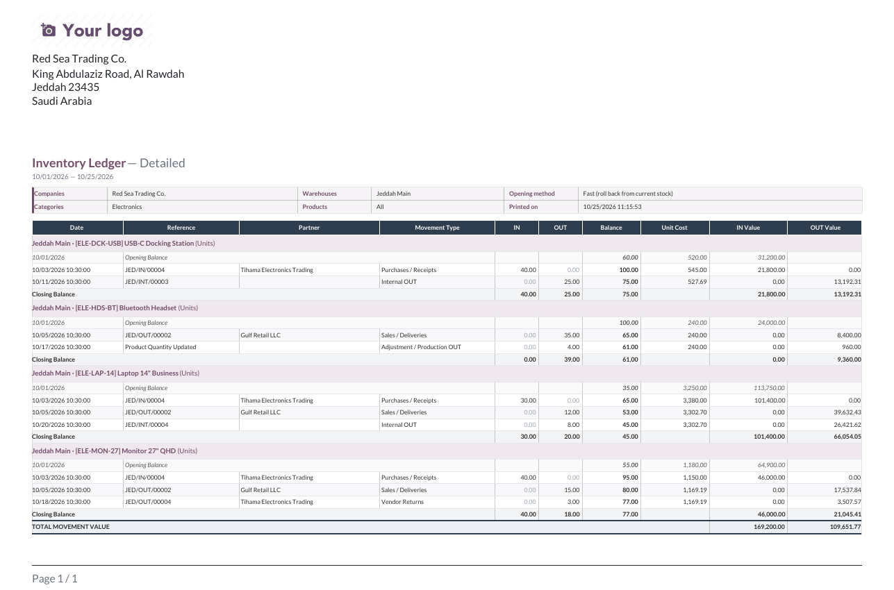
The wizard, list, pivot, graph, search filters, PDF and Excel are translated into Arabic (i18n/ar.po). For Arabic users the PDF mirrors automatically with dates kept readable, and the Excel sheet opens right to left. A .pot template is included for other languages.
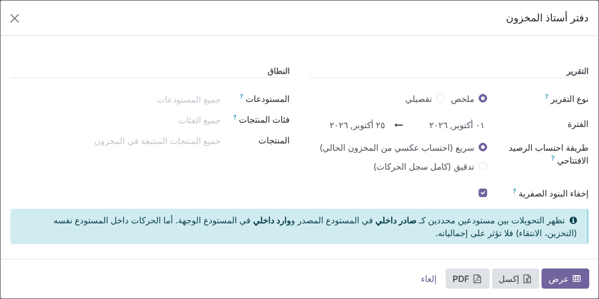
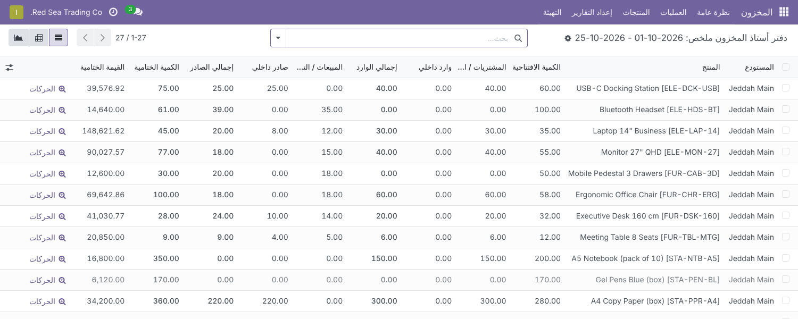
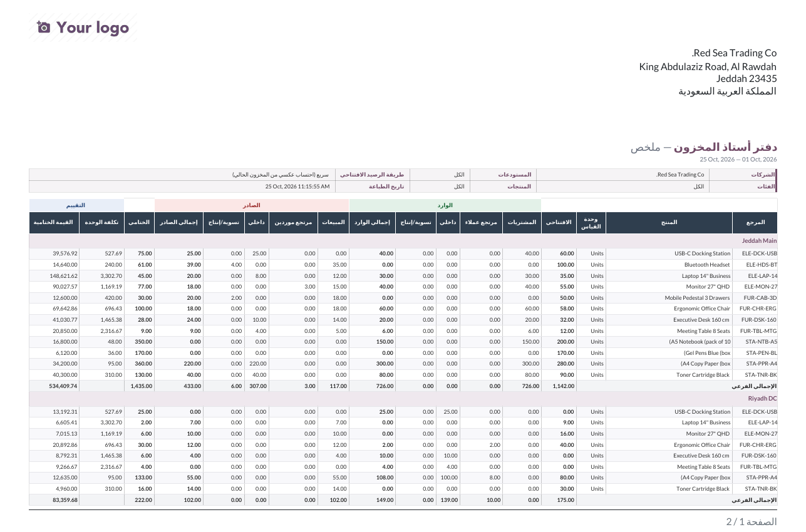
A warehouse is every internal location under it. A done stock move counts as IN for a warehouse when it enters it from outside, and OUT when it leaves it. The type comes from the location on the other side of the move.
What happens in the situations that usually break stock reports.
Uses Odoo’s own Inventory groups; no new group to assign.
| Who | Sees / can do |
|---|---|
| Inventory / Administrator | The Inventory › Reporting menu entry, the wizard, the views, Excel and PDF. |
| Inventory / User | Access rights to run the report and read its results. Odoo shows the Reporting menu to administrators only; add the menu to the user group if users should open it themselves. |
| Each user | Only their own report runs: record rules keep one user’s results and downloads private from another’s. |
| Multi-company | A report can only include companies the user is allowed in; any other company is refused with an access error, and result lines are limited to the user’s active companies. |
| Excel download | Logged-in users only, after an access check on the report run. |
| Odoo version | 18.0, Community and Enterprise |
| Depends on | stock, stock_account |
| Python dependency | xlsxwriter (already required by Odoo 18) |
| Menu | Inventory › Reporting › Inventory Ledger |
| Settings | None. The PDF paper format “Inventory Ledger (A4 Landscape)” can be adjusted in Settings › Technical › Paper Format (developer mode). |
| Models | inventory.ledger.wizard, inventory.ledger.line (transient, purged after 24 hours), inventory.ledger.engine (SQL engine), inventory.ledger.xlsx (Excel generator) |
| Reports | QWeb PDF “Inventory Ledger”; Excel streamed from /advanced_inventory_ledger_report/xlsx/<id> |
| Languages | English, Arabic (i18n/ar.po); .pot template included |
| Automated tests | 19 TransactionCase tests: movement classification, over-receipts and receipts in another unit of measure, closing quantity against qty_available (today and at a past date), closing value against the stock valuation, Fast and Audit methods agreeing over several periods, filters, running balance, Excel and PDF rendering, drill-down, right-to-left detection, and the security rules |
| License | LGPL-3 |
Questions, a demo, or an adaptation to your own process? Get in touch.
✉ ibrahim.yahiah@gmail.com LinkedIn: Ibrahim YahiaAuthor: Ibrahim Yahia · License: LGPL-3